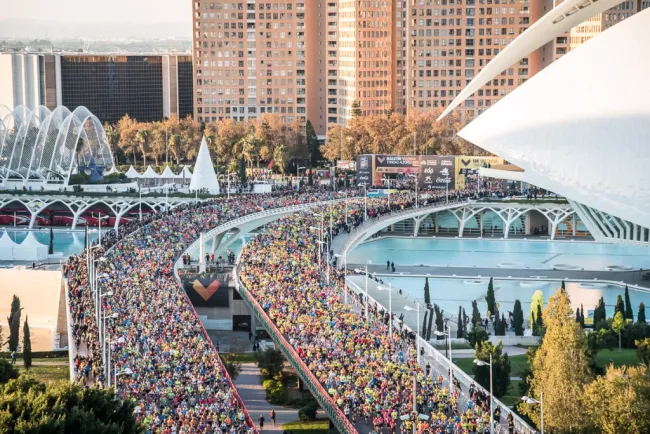

Maratón
La maratón es una carrera de larga distancia que consiste en correr una distancia de 42 195 metros. Froma parte del programa de atletismo de los Juegos Olimpicos de Atenas 1896.
Maratón ValénciaMaratón
La maratón es una carrera de larga distancia que consiste en correr una distancia de 42 195 metros. Froma parte del programa de atletismo de los Juegos Olimpicos de Atenas 1896.
Maratón ValénciaMaratón
La maratón es una carrera de larga distancia que consiste en correr una distancia de 42 195 metros. Froma parte del programa de atletismo de los Juegos Olimpicos de Atenas 1896.
Maratón Valéncia